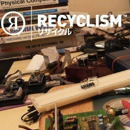
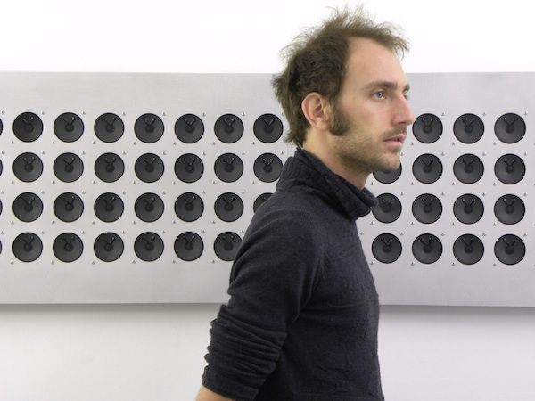
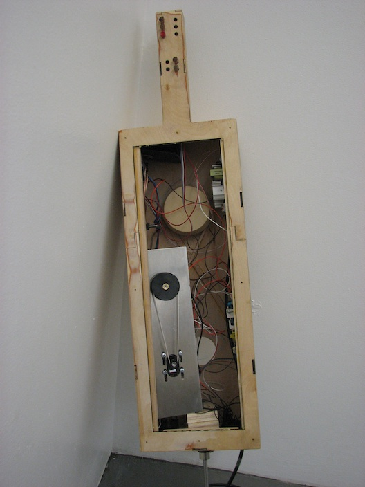

people doing strange things with electricity
The 4g7s-th dorkbot-nyc meeting took place at 7pm on Wednesday, April 7th, 2010 at Location One in SoHo.
The meeting was free and open to the public. People brought snacks to share. YUMM.
It featured the endothermic and predaceous:

Benjamin Gaulon aka Recyclism: Recent Projects
Issues like e-waste, obsolescence and disposable society have been the focus of my practice and theoretical research. Since 2005 I've been leading workshops and giving lectures in Europe about e-waste and Hardware Hacking / Recycling. Workshop participants explore the potential of obsolete technologies in a creative way and find new strategies for e-waste recycling. My research seeks to establish an inter-disciplinary practice and collaborations by creating bridges between art, science and activism, and by doing so, shifting the boundaries between art, engineering and sustainable strategies. For Dorkbot I will be presenting a selection of recent projects.
http://recyclism.com
Tristan Perich: Interval Studies
Perich's recent work, Interval Studies, investigates the concept of a musical interval as a dense continuum of sound, expressed physically as sound panels totaling hundreds of individual speakers. Produced during a recent residency at Mikrogalleriet in Copenhagen, the work explores the effects of massive polyphony and the transition from discrete, pure tones into white noise. Building this rich sonic mass from simple 1-bit tones, Perich explores the mathematical relationships and limits of digital and analogue sound and the systems that embody them.
http://www.tristanperich.com
Jeff Snyder: new instruments
Jeff Snyder is a composer, inventor and instrument builder working in the NYC area. He'll show some of his recent research into electromechanical oscillators, which has resulted in the Birl, an unusual breath-controlled instrument. He'll also talk about current state of his touch controller, the Snyderphonics Manta, soon to be released in a 2nd edition of 100 units.
http://snyderphonics.com
Next meeting: 05 May 2010